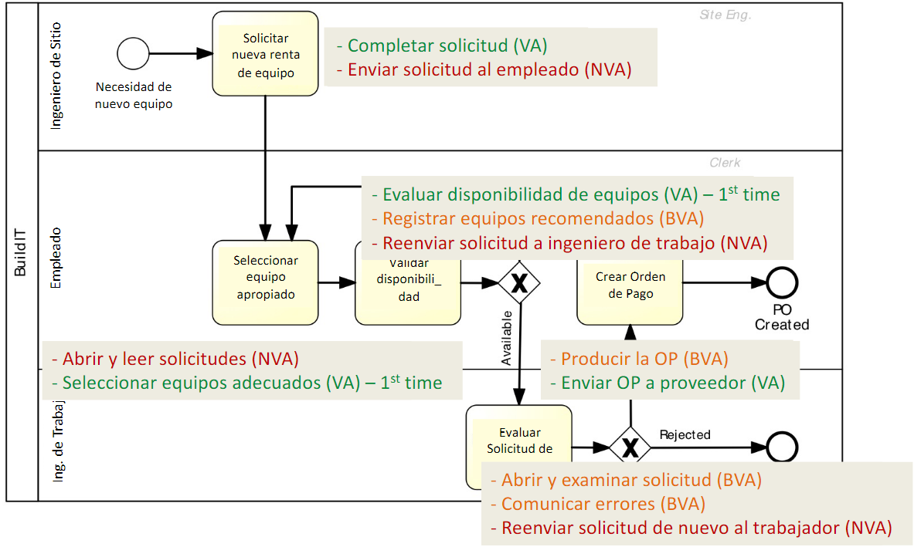
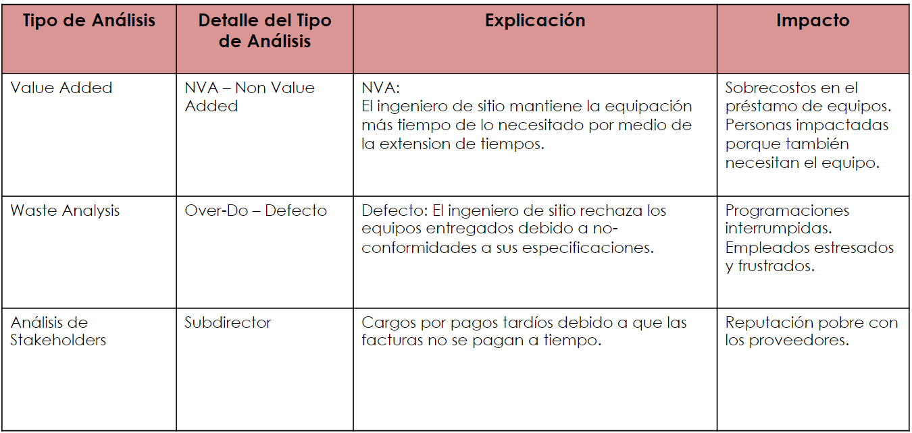

Pasar del AS IS al TO BE
Para esto se realiza un registro de issues, el cual se extrae de waste,
Value Added y stakeholder analysis
Análisis
value-added analysis
Revisar todas las tareas y ver si:
- VA Produce valor o satisfaccion al cliente
- El cliente pagaría por esto?
- Si se quita el paso el resutlado final tendrá menos valor para el cliente?
- BVA Es necesario o util para el negocio, a nivel econoómico y legal para la empresa por ejemplo
- NVA lo que no es ninguna de las otras 2. Ejemplos:
- Esperas, retrasos
- Retrabajo
- pasos de información entre actores

waste analysis
- Move
- Hold
- Inventario Se tienen muchos procesos sin terminar
- Espera
- Over-do
- Defectos Un vehiculo necesita volver a la estación debido a una omisión"
- Sobreprocesamiento Revisar demás una información, aun sabiendo que es poco probable que venga incompleta o algo asi.
- Sobre producción Se hacen muchas cosas demás, y hace que pasen solo unas cuantas. Ej: en el 50% de los casos, los asistentes no pasan el filtro
stakeholder
Preguntar a los relacionados con el proyecto que le mejorarían. Los relacionados son:
- Clientes del proceso
- Participantes del proceso
- Personas externas
- Supervisores del proceso
- Sponsors
registro-issues

entendiendo Issues
A cada Issue se le puede aplicar las siguientes tecnicas para entender la raiz del problema
- Why why Diagram Consiste en hacer 5 niveles de por qué sucede algo
- FishBone Diagram